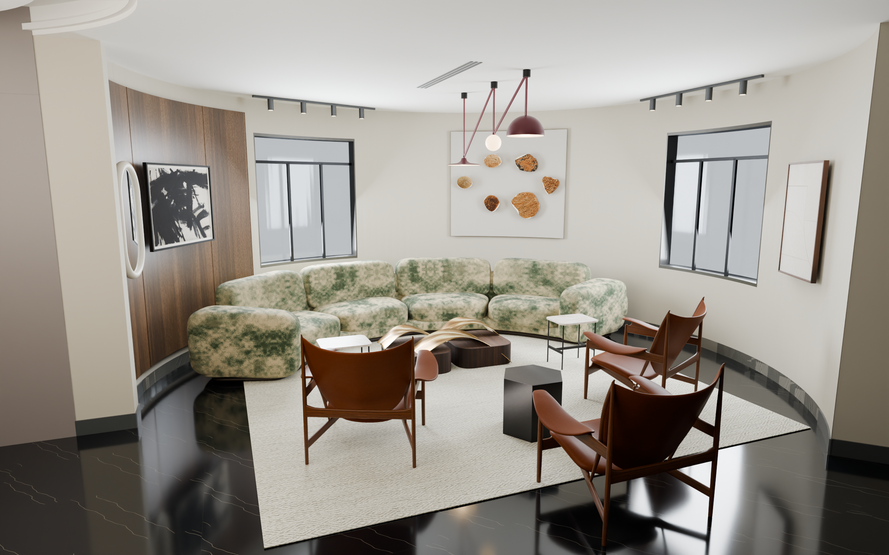
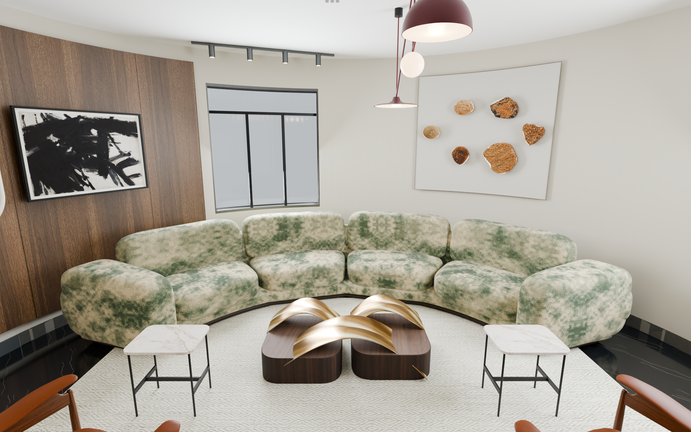
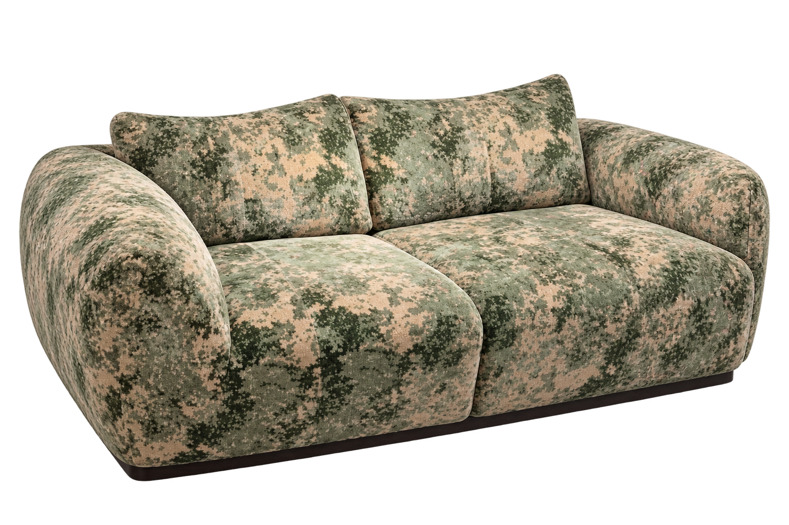
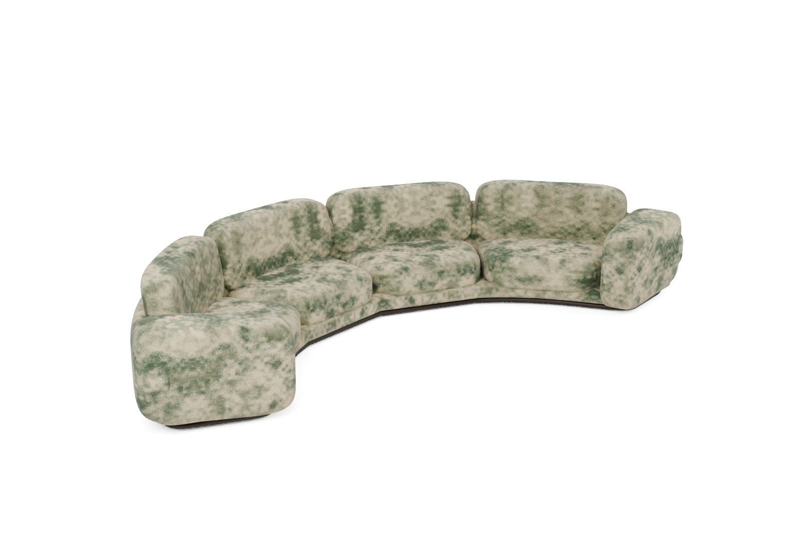
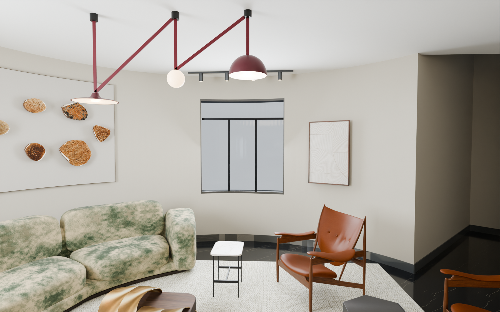
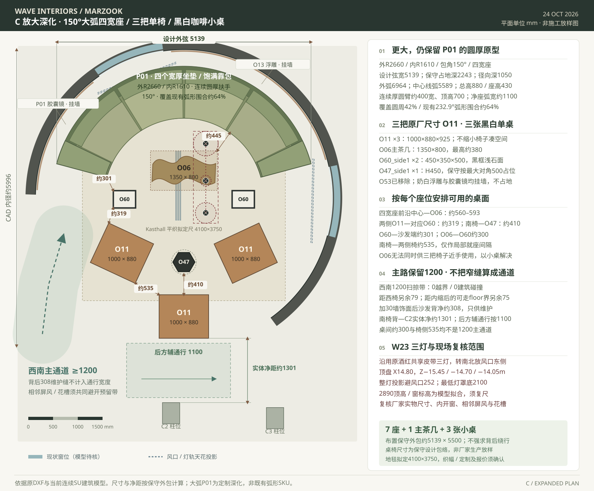
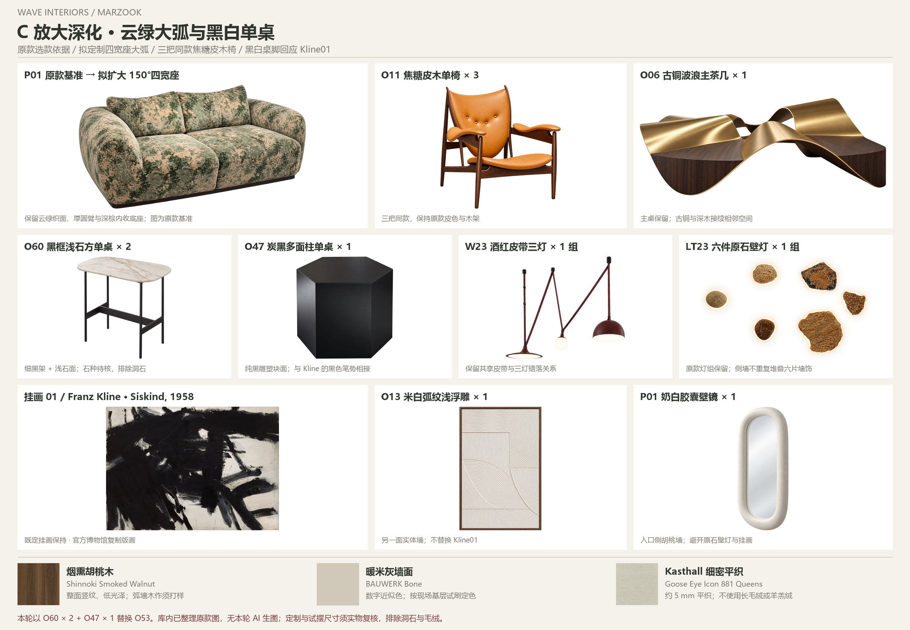

大弧形沙发
150° / 外R2660 / 内R1610 mm设计弦宽约5139、前后包络约2243、径向深1050；圆厚软包实际边缘会内收，不作厂家加工公差。
P01 FULLER FORM / A150° CONTINUOUS ARC
扩大为四个宽座，补齐第三把同款焦糖皮木椅；黑框浅石单桌与炭黑多面小桌，接续 Kline 挂画的黑白关系。
原款轮廓与云纹依据 · 150°大弧 / 四宽座 · O11单椅×3 · 黑白小桌×3 · 本轮无AI生图 / VR保留
01 / THE WHOLE GROUP
保留原款圆厚外臂、厚鼓坐垫、独立大靠包与内收低暗线底座，重新构成同心弧形。约5.14m的设计弦宽、约6.96m的外弧长，覆盖现有实体弧墙约64%。

02 / FAITHFUL UPHOLSTERY LANGUAGE
按 P01 原款重新塑造软包体量：约400mm切向厚臂、宽鼓坐面、后倾软角靠包及连续胖后壳。保持原云绿纹样，定制弧形的结构、分缝与布料方向交由厂家深化。



03 / BLACK & WHITE, WITH RELIEF
O53白石圆盘黑柱边几已退出本版。两张 O60 黑框浅石方几服务两侧座位，O47 炭黑多面柱服务新增单椅。墙上保留 Kline01 和六件原石灯，增加米白弧纹浅浮雕、奶白胶囊壁镜与安静的细线框背景。

04 / ROOM TO SIT AND MOVE
四宽座加三把全尺寸O11，保留原O06主茶几。布局依据原CAD净圆，南侧利用实际开敞连接地面，延续原黑石地面与相邻区域的开放关系。
设计弦宽约5139、前后包络约2243、径向深1050；圆厚软包实际边缘会内收，不作厂家加工公差。
椅子按1000×880×925 mm排布。O60占位450×350×500，O47按对角500、高450试摆；原款实物尺寸待核。
南椅背至C2当前实体边净约1301 mm；地毯拟完成4100×3750 mm，织幅、尺寸误差与压脚位置由供应商及厂家协调。

05 / YOUR ORIGINAL COLLECTION
黑白、木棕、焦糖、云绿与少量酒红，融入相邻红屏风及古铜金属。保留平织地毯，排除洞石、羊羔绒、长毛绒和毛皮。

SOURCES & DESIGN STATUS
保留完整库内图片与原始参考链接，石种、隐藏结构和尺寸均沿用原资料的待核标记。
本轮新增原款与来源 ↗O11原厂款式几何、P01原云纹、O06原款取纹、W23共享皮带三灯、原石壁灯及Kline01保持。
逐件来源与渲染记录 ↗沿用烟熏胡桃木、低纹理暖米灰。木作基层和收边按弧度深化，数字颜色以实物样为准。
Shinnoki弧面执行材料 ↗ · BAUWERK Bone ↗本轮为客户CAD基础上的物理材质渲染，没有新增AI生图。P01弧形根据原款照片与原纹样重新建模；所有新定制尺寸、软包分段、镜框/浅浮雕/桌子不可见面均需厂家深化，不宣称厂家成品CAD或已制造SKU。库内部分原素材含此前整理或补全，保留原标记。2890mm天花、窗细部与柱截面仍为现有模型拟合，须现场复尺；主辅路线已在当前模型及本轮家具外包上校验，相邻屏风/花槽与现场总平面保持避让。原页面和VR全部保留，本轮未改VR。